Summary
This analysis evaluated a targeted small RNA sequencing dataset consisting of three Illumina NextSeq-derived BAM files. The assay showed technically successful targeted enrichment, with high-confidence alignments, reproducible read-length structure, and recurrent enrichment across cancer-associated loci. Molecule-aware barcode deduplication revealed that raw read depth was partially inflated by amplification redundancy, particularly in sample3. Candidate variants were identified within enriched genes, but are interpreted as exploratory RNA-derived observations requiring orthogonal validation. Soft-clipped read analysis suggested a structured mixture of repetitive sequence mapping, homologous alignment ambiguity, off-target enrichment, and complex RNA fragment behavior.
Study Objective
The goal was to evaluate sequencing and alignment quality, identify enriched genes and targeted loci, characterize candidate nucleotide variants, and investigate the origin and interpretation of large soft-clipped read segments. Because the assay is targeted small RNA sequencing rather than whole-transcriptome or DNA sequencing, all findings are interpreted in the context of targeted enrichment, short-fragment alignment behavior, and molecule-aware barcode deduplication.
Analysis Workflow
The workflow was organized to separate assay QC, molecule-aware enrichment, exploratory variant calling, and soft-clip interpretation.
BAM Inspection
Reviewed alignment structure, read lengths, mapping quality, secondary alignments, and molecular barcode tags.
QC Profiling
Summarized read-length distributions, MAPQ behavior, barcode complexity, and amplification redundancy.
Gene Enrichment
Aggregated reads into recurrent regions and annotated enriched loci with GENCODE v19.
Variant Analysis
Used bcftools-based candidate calling within enriched target regions, interpreted cautiously as RNA-derived evidence.
Soft-Clip Analysis
Extracted large soft-clipped segments and remapped them to assess repetitive, ambiguous, or structurally complex origins.
Quality Control Overview
Alignment-level QC showed strong targeted assay behavior. Samples shared reproducible fragment-length peaks around approximately 130 bp and 150 bp, and most reads aligned with high confidence. However, sample3 showed reduced molecular complexity and elevated reads-per-barcode ratios, suggesting increased amplification redundancy relative to samples 1 and 2.
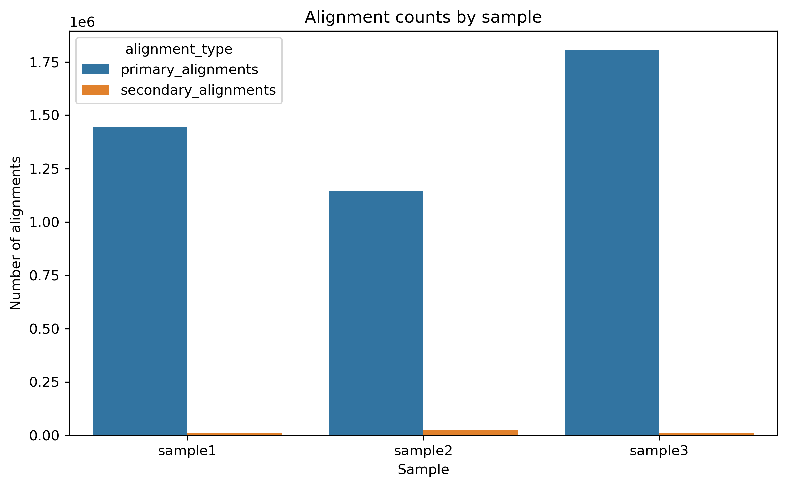
Alignment counts by sample
What this shows: Total aligned read support across the three targeted small RNA-seq BAM files.
Why it matters: This provides the sample-level sequencing context for downstream QC, enrichment, variant, and soft-clip interpretation.
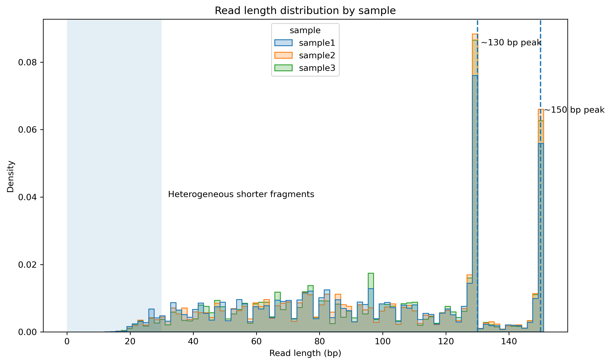
Read length distributions
What this shows: Reproducible enrichment peaks around ~130 bp and ~150 bp across samples.
Why it matters: Consistent fragment populations support a reproducible targeted assay structure rather than random sequencing noise.
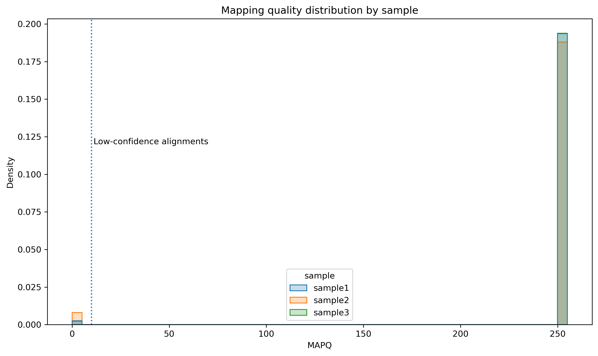
Mapping quality distributions
What this shows: Most reads aligned with high confidence, with a minority of low-MAPQ alignments.
Why it matters: Low-MAPQ reads likely reflect repetitive or homologous sequence content and should be interpreted cautiously.
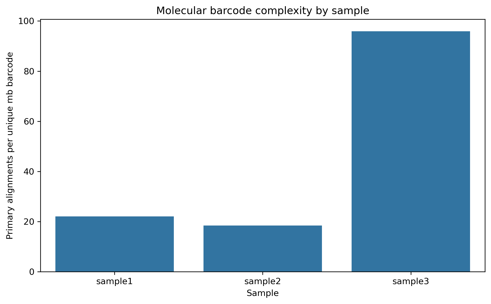
Barcode complexity and amplification redundancy
What this shows: sample3 demonstrated elevated reads-per-barcode ratios compared with samples 1 and 2.
Why it matters: Raw read depth in sample3 likely overestimates true molecular abundance, making barcode-aware deduplication essential.
Targeted Gene Enrichment and Molecule-Aware Deduplication
The assay enriched a biologically coherent set of cancer-associated genes, including GNAS, CCND1, FGFR1, AXL, MET, EGFR, RAF1, BRAF, IDH2, and RAB7A. Barcode-aware deduplication substantially altered enrichment estimates in sample3, where several loci showed extreme reads-per-molecule ratios.
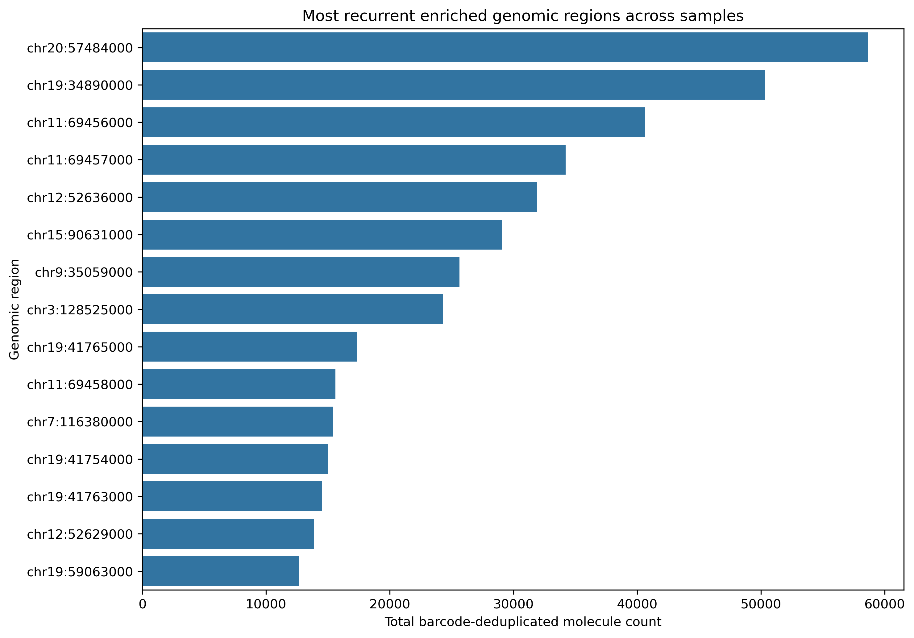
Shared enriched regions
What this shows: Enrichment was concentrated in recurrent genomic regions shared across samples.
Why it matters: This supports the interpretation that the assay captured targeted loci rather than random genome-wide coverage.
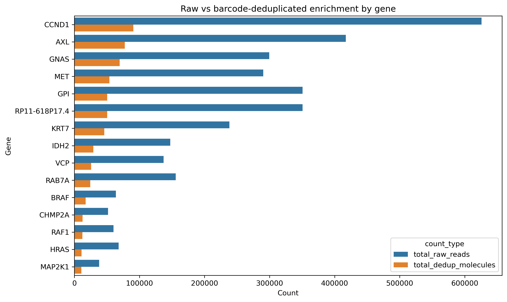
Raw vs barcode-deduplicated enrichment
What this shows: Deduplication strongly affected enrichment estimates, especially in sample3.
Why it matters: Molecule-aware quantification prevents amplification-heavy loci from being overinterpreted as true abundance signals.
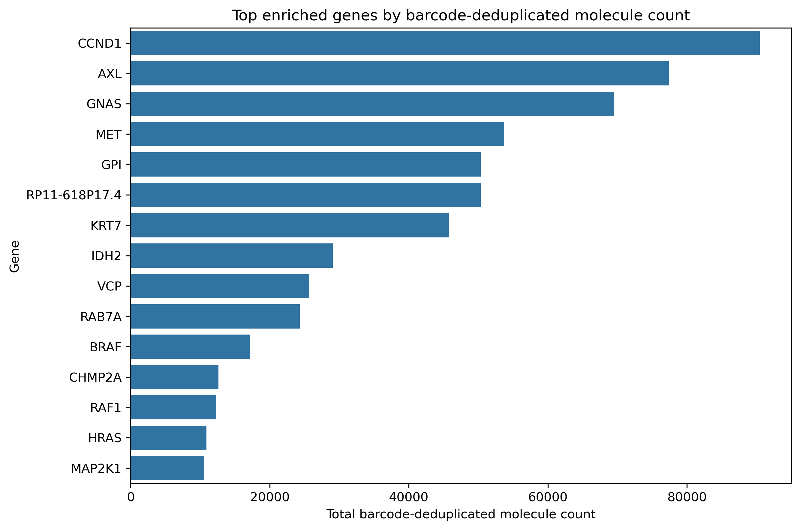
Top enriched genes after barcode-aware deduplication
What this shows: The most strongly represented genes after collapsing reads by molecular barcode.
Why it matters: Deduplicated counts provide a more molecule-aware estimate of targeted enrichment than raw read depth alone.
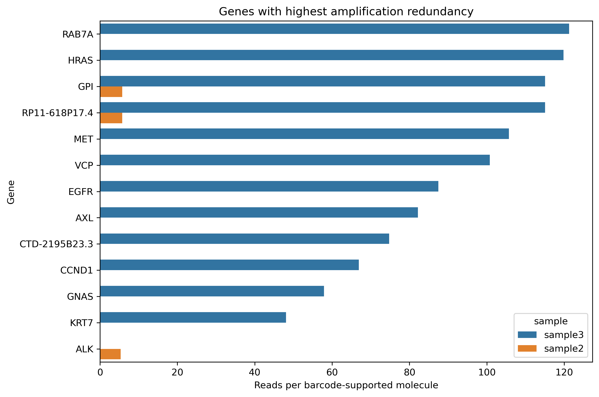
Amplification redundancy by gene
What this shows: Gene-level differences between raw read support and barcode-deduplicated molecular support.
Why it matters: High redundancy indicates loci where raw read depth could overstate true molecular abundance.
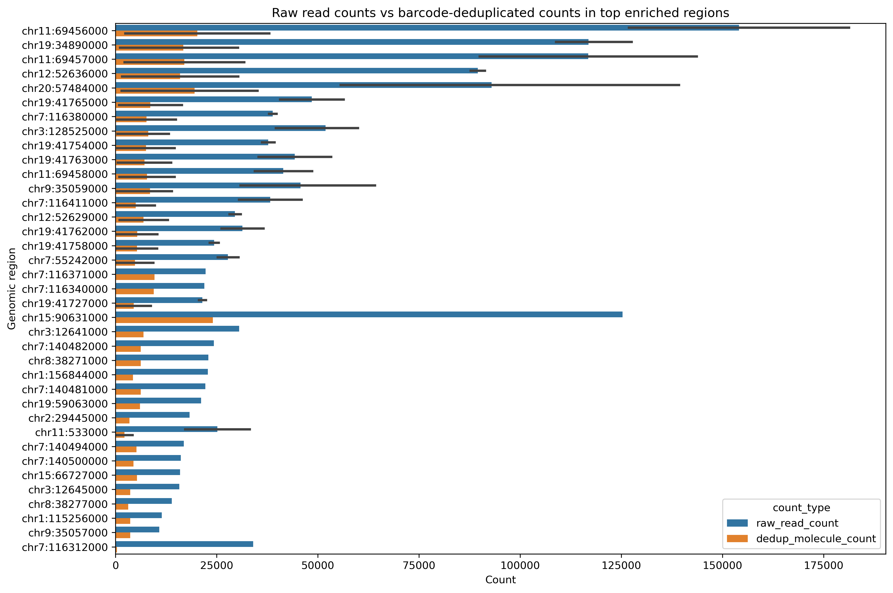
Top enriched regions: raw vs deduplicated counts
What this shows: Region-level enrichment before and after molecule-aware deduplication.
Why it matters: This highlights where amplification strongly changes the apparent ranking of targeted loci.
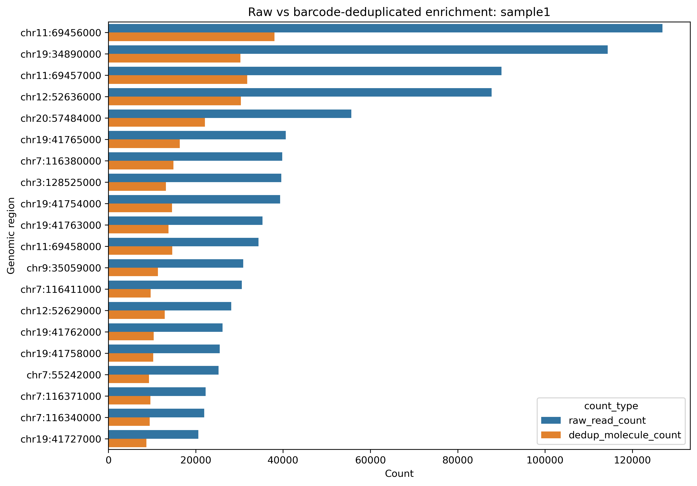
sample1 region-level redundancy
What this shows: Raw and deduplicated enrichment patterns for sample1.
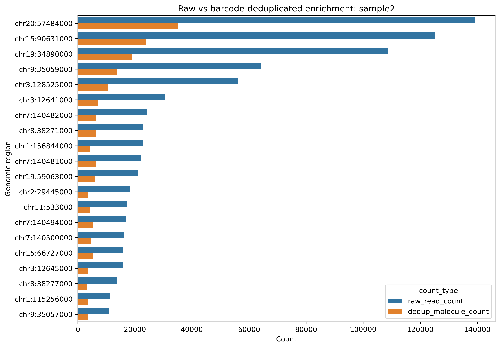
sample2 region-level redundancy
What this shows: Raw and deduplicated enrichment patterns for sample2.
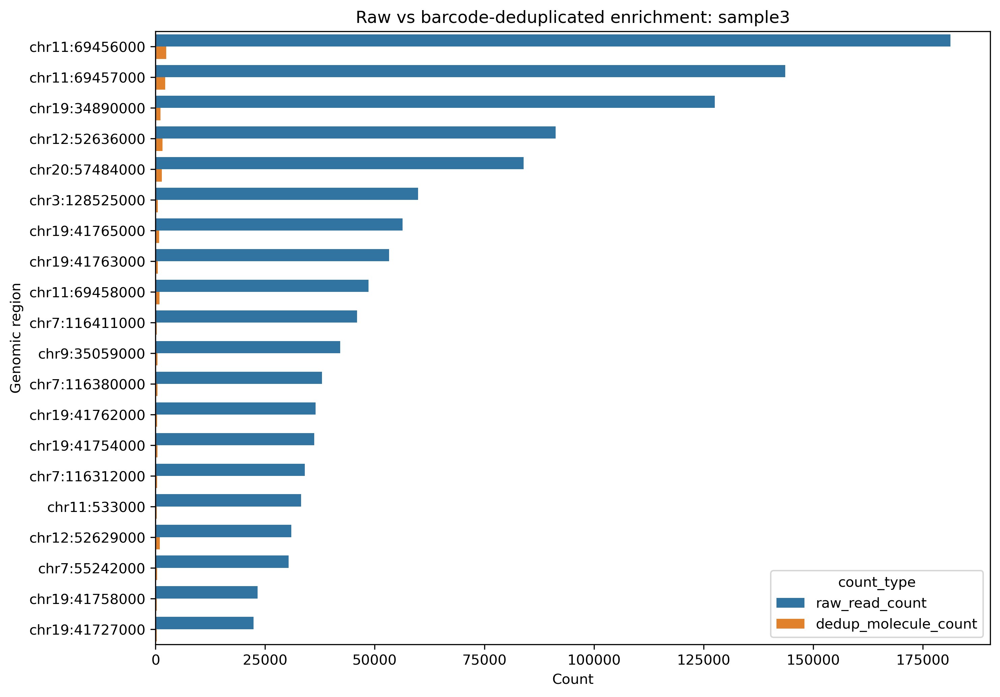
sample3 region-level redundancy
What this shows: sample3 shows the most pronounced raw-versus-deduplicated divergence.
Candidate Variant Analysis
Candidate nucleotide substitutions and small indels were evaluated within enriched target regions using a bcftools-based strategy. Multiple candidate variants were identified in cancer-associated genes including FGFR1, AXL, RAF1, EGFR, MET, CCND1, and RAB7A. FGFR1 showed recurrent high-confidence substitutions across all three samples, while sample2 showed the broadest overall candidate variant burden.
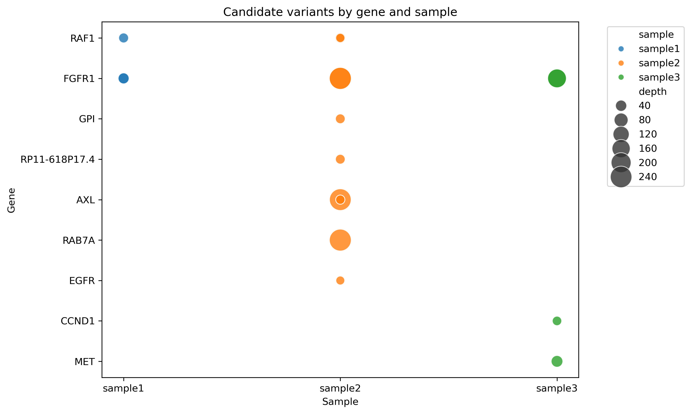
Candidate variants by gene and sample
What this shows: Candidate variants localized to enriched genes, including receptor tyrosine kinase and MAPK-associated loci.
Why it matters: These observations are biologically plausible but exploratory because RNA-seq variant calls can be affected by expression bias, RNA editing, RT artifacts, and amplification redundancy.
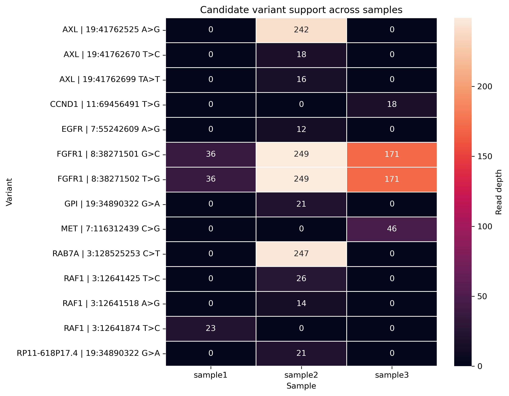
Variant support heatmap
What this shows: Relative support for candidate events across genes and samples.
Why it matters: Heatmap structure helps distinguish recurrent signals from sample-specific candidates.
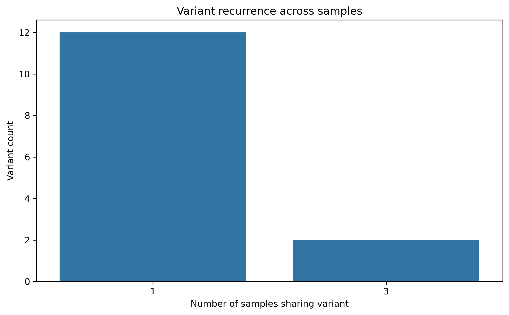
Variant recurrence across samples
What this shows: Candidate events ranked by recurrence across the three BAM files.
Why it matters: Recurrent RNA-derived variants may represent stronger hypotheses, while still requiring orthogonal validation.
Soft-Clipped Read Analysis
Large soft-clipped reads were investigated to assess whether they reflected artifacts, repetitive sequence mapping, alignment ambiguity, or structurally complex RNA fragments. Samples 1 and 2 showed more constrained soft-clipping distributions, while sample3 had broader clipping behavior extending beyond 100 bp. Soft clips were recurrent at specific loci, including a strong signal near the enriched CCND1 region on chromosome 11.
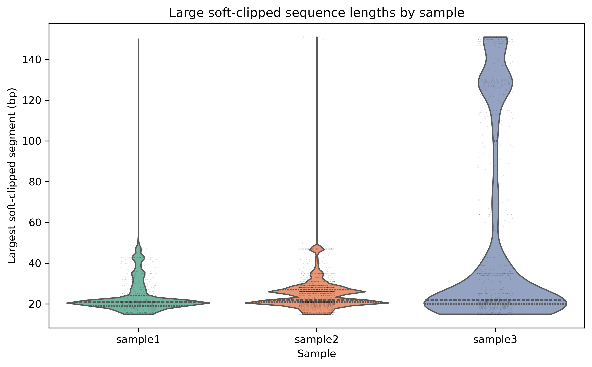
Soft-clip length distributions
What this shows: sample3 exhibited a broader distribution of large soft-clipped segments than samples 1 and 2.
Why it matters: The broader pattern may reflect sample-specific alignment complexity, repetitive sequence content, or technical irregularity.
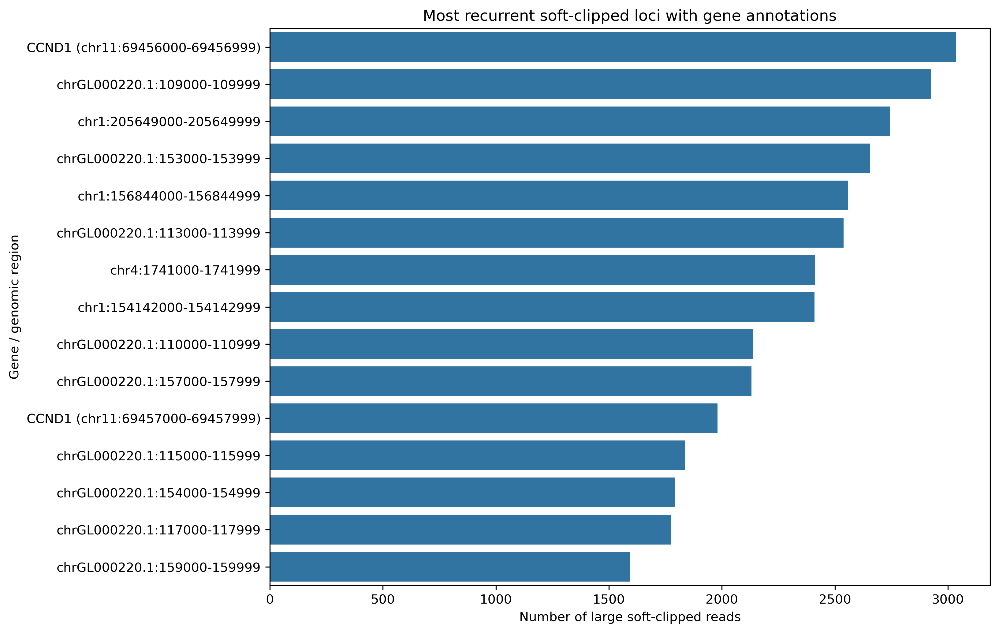
Recurrent soft-clipped loci
What this shows: Soft clipping was enriched at recurrent genomic loci rather than randomly distributed.
Why it matters: Recurrent locus-level structure argues against pure sequencing noise and supports a mixture of repetitive mapping and complex transcript-associated behavior.
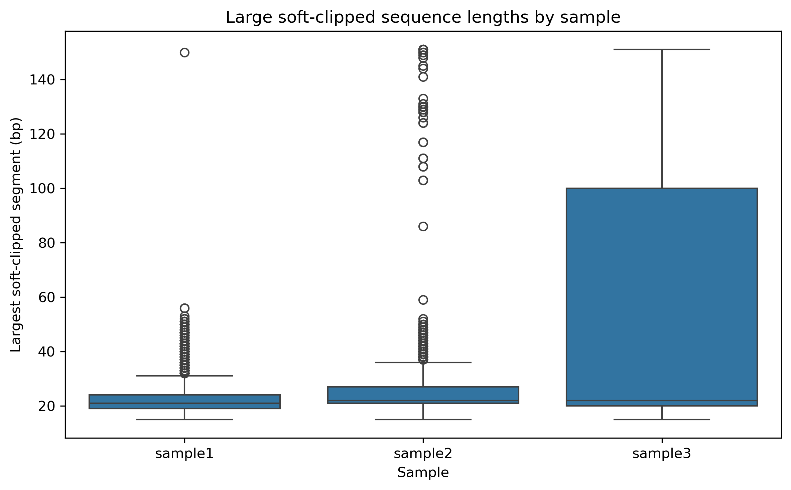
Global soft-clip length distribution
What this shows: The overall distribution of large soft-clipped segments across the dataset.
Why it matters: This contextualizes whether soft clipping is dominated by short edge effects or longer ambiguous segments.
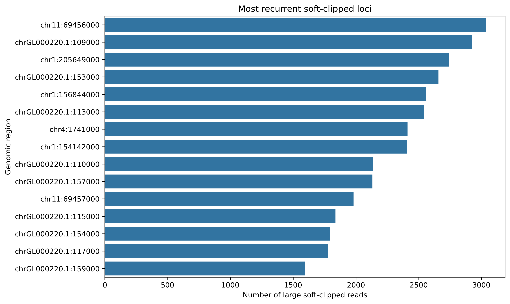
Top recurrent soft-clip loci
What this shows: Genomic loci with the strongest recurrent soft-clip support.
Why it matters: Locus recurrence helps prioritize whether soft clips reflect structured biology, repetitive sequence, or target-associated alignment ambiguity.
Un_gl000220,
multiple canonical chromosomes, and previously enriched loci. No single dominant recurrent fusion-like event was identified.
Key Findings
| Finding | Evidence | Interpretation |
|---|---|---|
| Technically successful targeted enrichment | Recurrent enrichment across shared cancer-associated loci including CCND1, FGFR1, AXL, MET, EGFR, RAF1, BRAF, GNAS, IDH2, and RAB7A. | The assay captured a focused, biologically coherent set of target regions rather than diffuse genome-wide signal. |
| sample3 has elevated amplification redundancy | Barcode complexity and raw-vs-deduplicated comparisons showed high reads-per-molecule ratios in sample3. | sample3 raw read depth should not be interpreted as direct molecular abundance without barcode-aware correction. |
| Candidate variants are biologically plausible but exploratory | Variant calls occurred in enriched cancer-associated genes, with recurrent FGFR1 substitutions observed across samples. | RNA-derived variant evidence requires cautious interpretation and orthogonal DNA-level validation. |
| Soft-clipped reads are structured, not random | Large soft clips recurred at enriched loci and remapped partly to repetitive/unplaced contigs. | The most likely explanation is a mixture of repetitive mapping, homologous alignment ambiguity, off-target enrichment, and complex RNA fragments. |
Discussion
The most important interpretation is that this dataset behaves like a targeted sequencing assay with coherent enrichment at cancer-associated loci, rather than a random or failed sequencing experiment. The read-length, MAPQ, and enrichment profiles collectively support a technically successful assay. However, molecule-aware analysis shows that read depth and molecular abundance diverge in sample3, making barcode-aware deduplication necessary for any quantitative comparison.
The variant and soft-clipping analyses are best viewed as hypothesis-generating. Candidate variants localized to biologically relevant genes, but targeted RNA sequencing cannot distinguish somatic DNA variation from RNA editing, allele-specific expression, reverse-transcription artifacts, or amplification-related effects without additional validation. Similarly, recurrent soft-clipped segments show meaningful structure, but remapping supports a mixed origin involving repetitive reference content and alignment ambiguity rather than a single dominant fusion event.
Conclusion
Collectively, the dataset represents a technically successful targeted small RNA-seq assay with biologically structured enrichment patterns. The strongest findings are the recurrent enrichment of cancer-associated loci and the clear value of molecule-aware barcode deduplication, particularly for sample3. Candidate variants and soft-clipped reads provide useful exploratory signals, but downstream biological or clinical interpretation would require orthogonal validation and careful accounting for amplification redundancy and repetitive-sequence alignment behavior.
Reproducibility and Supplemental Materials
The full computational workflow, notebooks, and supporting scripts are provided as supplemental materials. This web report and the accompanying PDF are intended as the primary review documents, while the repository provides reproducibility and implementation details.
Reference resources: hg19 reference genome and GENCODE v19 annotations.
Regeneration command: bash scripts/download_and_index_references.sh